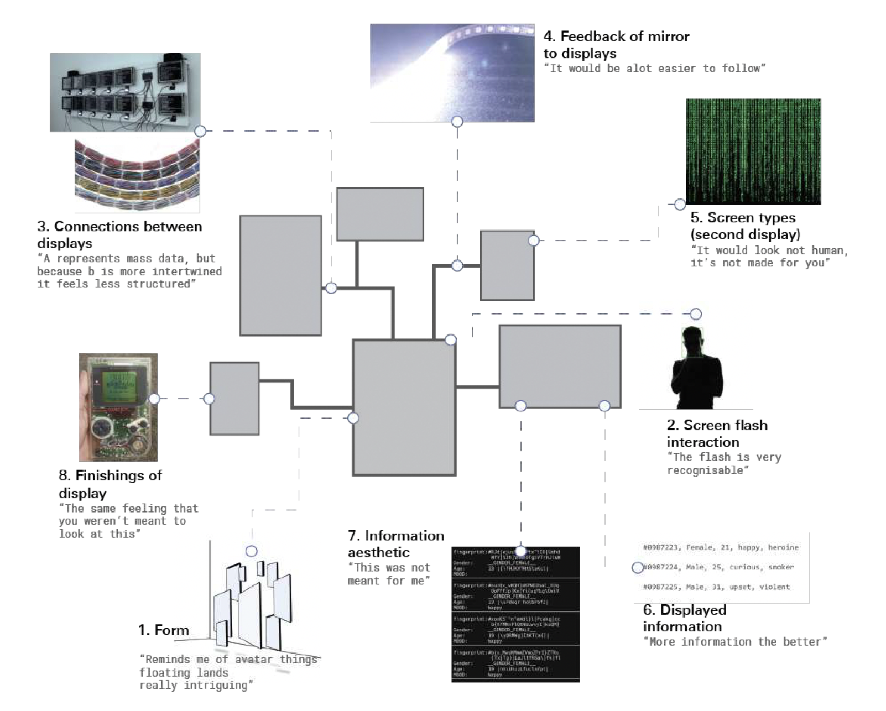
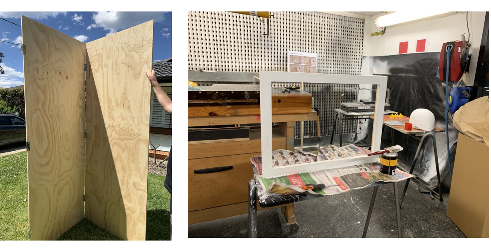
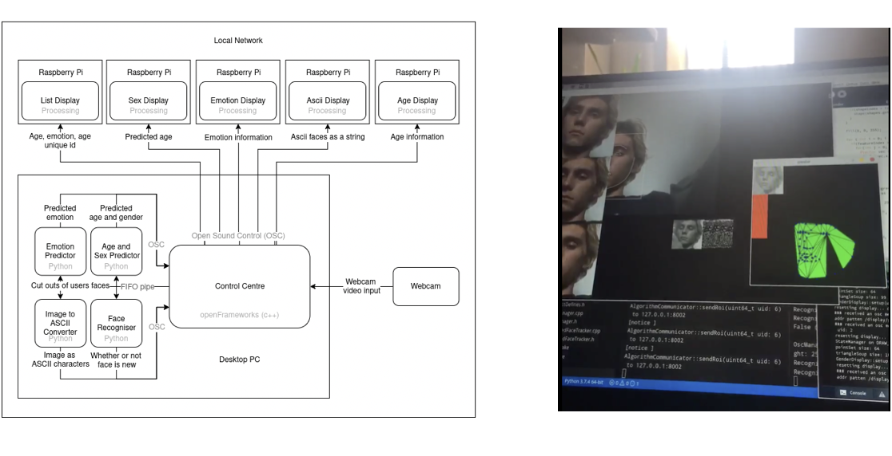
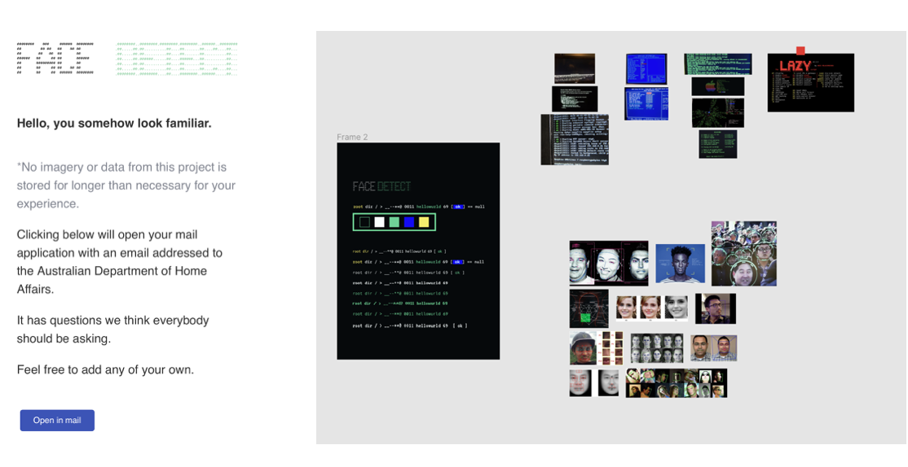
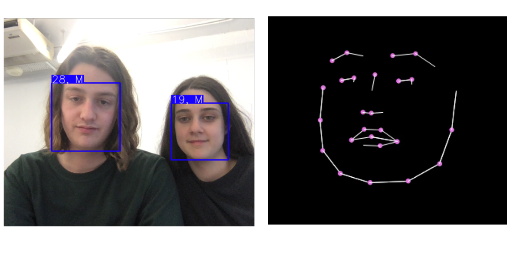

FACE D_TECT
AN INTERACTIVE INSTALLATION
FACE D_TECT aims to raise awareness and get people to question the potential of A.I. and computerised surveillance. It particular aims to highlight the effect that these technologies can have on marginalised or disadvantaged people
Team
Benjamin Fleming
Nathan Judges
Beth Koulyras
Connor Meehan
Role
Prototyping
User Testing
Front-End Development
Time
Late 2019
Tools
Figma
P5.js
INTRODUCTION
This is a project I worked on in collaboration with Benjamin Fleming, Nathan Judges and Connor Meehan at the University of Sydney. The brief we were given was augmenting urban environments with a focus on empowering marginalised and disadvantaged communities.
We began this project by mind-mapping all the marginalised groups we could think of and highlighted the ones that were most accessible and that we could realistically design for.
We then sought to understand how public spaces could be used to empower these marginalised and disadvantaged communities.
BACKGROUND RESEARCH
We conducted research of existing campaigns and how public spaces have been augmented to do this very thing. I focused on campaigns that raised money for charities and social impact installations.
 This is an installation demonstrating how fast the population grows. A new human pops up every 400 milliseconds. As space gets restricted, a door can be opened to release some of the humans allowing space for the new ones.
This is an installation demonstrating how fast the population grows. A new human pops up every 400 milliseconds. As space gets restricted, a door can be opened to release some of the humans allowing space for the new ones.
DISCOVERING A CONCEPT
After our research, we came across an interesting problem – while these campaigns would bring about great awareness, in the end they had a low impact. We soon found that designing for marginalised people is rather complex and risks trivialisation when they are not a direct part of the process. Trying to solve a complex problem with a simple solution might not be the best approach.
We decided to look at things from a new perspective. From further research, we came up with four key factors to consider when designing for marginalised and disadvantaged communities. We needed to create an artefact that:
1.
Evinced empathy and reflection through an artistic approach
2.
Actively engaged citizens and evoked critical thought
3.
Is inclusive by bringing awareness to technological illiteracy
4.
Leaves a lasting impression and promotes sharing
IDEATION
We conducted research of existing campaigns and how public spaces have been augmented to do this very thing. I focused on campaigns that raised money for charities and social impact installations.
 An A.I. based facial recognition screen that analyses and makes assumptions about you. It shows how privileged you are in comparison with the rest of the world.
An A.I. based facial recognition screen that analyses and makes assumptions about you. It shows how privileged you are in comparison with the rest of the world.
 A public bench that is only comfortable for the user when they are lying down. When the user is sitting, bumps protrude from the surface.
A public bench that is only comfortable for the user when they are lying down. When the user is sitting, bumps protrude from the surface.
 A fun way of donating money to a charity. Two users swipe their credit cards and then play some sort of game, the loser of which has to pay the donation.
A fun way of donating money to a charity. Two users swipe their credit cards and then play some sort of game, the loser of which has to pay the donation.
After discussing the benefits and drawbacks of each concept, our group came together and decided on three hero concepts:
 As users pass by a trail of projected sillouhettes, they generate statements of harassment that follows them. A user can remove them by donating money at the terminal.
As users pass by a trail of projected sillouhettes, they generate statements of harassment that follows them. A user can remove them by donating money at the terminal.
 When a user looks into a mirror it captures an image of them. A cryptic cumber appears in a list, when they look again they see nothing. This induces reflection on the role technology plays in our lives.
When a user looks into a mirror it captures an image of them. A cryptic cumber appears in a list, when they look again they see nothing. This induces reflection on the role technology plays in our lives.
USER TESTING
To evaluate which concept would be most effective, we employed several testing methods: surveys, questionnaires, concept statements and experience walkthroughs of low-fidelity prototypes.
Surveys
Firstly, surveys were handed out to several participants to gain an understanding of peoples’ attitudes towards charity and donations, as well as the effectiveness of campaigns in public spaces and installations around the city.
Pre and Post Questionnaires
Participants were taken through a questionnaire pre and post their experience of the concept statement and prototype testing.
Concept Statements
Concept statements were used to test participants initial response to aspects of our ideas. Participants would read out a statement and provide an initial response. It was used to quality check the concepts before testing them out with low fidelity prototypes. The results of this gave us an insight into how effective the functional, emotive and visceral aspects of our concepts would be.
Low-Fidelity Prototype Testing
I was tasked with constructing the anti-hostile architecture prototype. Built with cushions and tennis balls, I wanted to emulate the experience in the simplest form. The experience walkthrough was then filmed as I took the participants through a scenario of a potential user of our product.
The message only resonated with those that had experience or knowledge with homelessness or hostile architecture
"There's a reason why this weird bench is making me lie down, but I don't know if I'd be able to put two and two together. " - Cindy
The lack of supplementary information prevented users from exploring the concept further
"I guess you could have like a plaque on the back of the bench. Or, like, a sign maybe next to it." - Ruth
Participants who were familiar with anti-hostile architecture picked up on the message quicker than those who were not. Every participants also suggested there should be some kind of indicator suggesting the user should lie down. Without this, participants were less inclined to continue interacting with this installation.
For Harassment Trails we found the display had little impact on the target demographic, and it had to potential to bring up trauma or offend others.
Through testing of Face D_Tect we found it to be engaging and able to catalyse further discussing, and it was evocative and able to generate self reflection.
Multi-Variate Desirability Testing
We conducted a multi-variate desirability test to understand how to best construct this artwork from an aesthetic, informational and feedback perspective to support perceptions from our previous testing.
We had participants choose between ways of demonstrating different elements of our concept to best communicate our message.
Participants found it to play on themes of threatening secrecy, build a sense of mysterious power and helplessness and that we should personify the installation, giving it intent and agenda.
BUILDING THE PROTOTYPE
Nathan
Nathan was responsible for constructing all of the hardware components and acquiring materials. He built the physical structure bringing it to its final physical form.
Connor
Connor was responsible for all back-end development and technical implementation, making sure all the hardware and software bits fit together.
Benjie
Benjie was responsible for designing the mockups and overlooking the whole project. He also wrote the email that will be sent to a Government Dept. as part of the installation.
Me
I was responsible for finding A.I. algorithms that use different kinds of facial detection, as well as bringing Benjie’s mockups to life with the front-end development using Processing and P5.js.
FINAL PRODUCT
First the users face is checked against other similar faces to check it is a new capture - ASCII is used to create a close representation of the user without being too literal.
The users facial landmarks are mapped and drawn through a neural network, inferring their age. This adds to the ID below each screen program.
These landmarks are then triangulated using a Delaunay algorithm to form a topology map, inferring their sex. The ID grows - reducing the user to a number.
The users face is then recomposed as pieces from landmarks - completing the capture process.
This is then catalogued as an ID with the captured information. When the user has been processed they cannot interact with the artwork again - the mirror displaying their ID if they glance into it.
The unknowing aspect and being unable to interact with the artwork is designed to nudge the user into viewing the placard - a message asking them to pose a question.